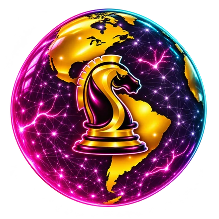

<!doctype html>
<html lang="en">
<head>
<meta charset="utf-8">
<meta http-equiv="Content-Security-Policy" content="default-src 'none'; img-src 'self' file:; font-src 'self' file:; style-src 'unsafe-inline'; script-src 'unsafe-inline'">
<title>Cake</title>
<!--
  PS Cake (21 Nov 2026): the boot animation (every start: 1 Night drive, 2 Harbor lights, 3 City swarm) and the logo
  reveal (card 4, the old white PS icon turns into the knight globe). Ported from the approved demo page (its Mac view
  at 1710 x 1112, a 15 inch MacBook Air) one to one: the same art, the same keyframes and timings. The stage is drawn at
  1710 x 1112 and scaled to cover the island's screen (scale 1 on that screen).
  What changed from the demo:
  - No island and no menu bar are drawn here: PS's REAL island and menu bar float above this window (Sources/Cake.swift).
    The neon outline is built round the real island's place, and the Mac grows the real island out of it.
  - No sign in card: signed out, the Mac's own Sign in window rises in as the scene fades.
  - The line under CAKE is the running version; the headline comes from the Mac (CakeCore.headline).
  - The scene ends by fading away once its fixed length is over and PS is ready.
  The page never plays a sound. Only transform and opacity move.
  The Mac calls window.__cake.play(o) / land(a) / skip(); the page answers {type:"ready"}, {type:"built"} (the neon island
  is built: is PS ready?), {type:"exit"} (the fade starts), {type:"done"} and {type:"click"}.
  PS 1.74 (the developer, 22 Nov 2026: it built the island at the top centre although his island was moved): just before it
  builds, the page asks {type:"aim"} and the Mac answers aimed({target, notch, from}) with the island's place as of then
  (an old Mac that never answers: the place from play() is kept, after a short wait). When PS is ready, land(a) says where the
  real island is: the outline glides onto it if it is somewhere else. Pieces fly in from the side facing the island
  (from: x -1 from the left to 1 from the right, y 1 from below, -1 from above: Sources/IslandStartCore.swift approach).
-->
<style>
@font-face{font-family:'Anton';src:url(cake-anton.ttf) format('truetype');font-display:block}
*{box-sizing:border-box;margin:0;padding:0}
html,body{width:100%;height:100%;overflow:hidden;background:#0b0610;-webkit-font-smoothing:antialiased;-webkit-user-select:none;user-select:none;cursor:default}
body{opacity:0}
.stage{position:absolute;left:0;top:0;width:1710px;height:1112px;transform-origin:0 0;overflow:visible}
.win{position:absolute;left:0;top:0;width:1710px;height:1112px;overflow:hidden;isolation:isolate;background:#0b0610;
  --top:44px;--hz:600px;--ky:330px;--kf:190px;--sun:470px;--cityH:150px;--cell:64px;--persp:520px;--palmW:300px;--palmH:692px;--spW:340px;--spH:785px}
.host{position:absolute;inset:0}
.fx{position:absolute;inset:0;pointer-events:none;z-index:35}
#clock{position:absolute;width:0;height:0}

/* ---------- shared pieces ---------- */
.scn{position:absolute;inset:0;overflow:hidden;color:#f7eef3}
.scn > *{position:absolute}
.stage.rm .scn *,.stage.rm .scn{animation:none!important}

/* ---------- boot animations (every start): one neon family, each ends by building the island ---------- */
@keyframes spin{to{transform:rotate(1turn)}}
@keyframes tw{from{opacity:.15}to{opacity:.9}}
@keyframes sway{from{transform:rotate(-1.4deg)}to{transform:rotate(1.2deg)}}
@keyframes haze{from{transform:translateY(2px) scaleY(.85);opacity:.55}to{transform:translateY(-3px) scaleY(1.15);opacity:1}}
@keyframes shimmer{from{transform:translateY(0) scaleY(1)}to{transform:translateY(-1.5px) scaleY(1.008)}}
@keyframes drive{to{transform:translateY(var(--cell))}}
@keyframes passL{0%{transform:translate(calc(var(--palmW) * -.2),0) scale(.1);opacity:0}14%{opacity:1}100%{transform:translate(calc(var(--palmW) * -3.4),calc(var(--palmH) * .6)) scale(1.7);opacity:1}}
@keyframes passR{0%{transform:translate(calc(var(--palmW) * .2),0) scale(.1);opacity:0}14%{opacity:1}100%{transform:translate(calc(var(--palmW) * 3.4),calc(var(--palmH) * .6)) scale(1.7);opacity:1}}
@keyframes beamA{from{transform:rotate(-22deg)}to{transform:rotate(10deg)}}
@keyframes beamB{from{transform:rotate(20deg)}to{transform:rotate(-12deg)}}
@keyframes glint{from{transform:translateX(-4px) scaleX(.8);opacity:.4}to{transform:translateX(4px) scaleX(1.1);opacity:1}}
@keyframes wob{from{transform:scaleY(-1) translateX(-3px) scaleX(1.004)}to{transform:scaleY(-.97) translateX(3px) scaleX(.996)}}
@keyframes calm{from{opacity:.62}to{opacity:1}}
.b-world,.b-far{inset:0;transform-origin:50% 40%;will-change:transform}
.b-world > *,.b-far > *{position:absolute}
.b-sky,.b-night,.b-dusk{left:0;right:0;top:0;height:calc(var(--hz) + 2px)}
.b-sky{background:linear-gradient(180deg,#1a0b3a 0%,#4a1458 30%,#a3246a 55%,#f0466e 76%,#ff8a48 92%,#ffc05a 100%)}
.b-night{background:linear-gradient(180deg,#04020d 0%,#100830 42%,#33104d 76%,#7a1a5a 100%);opacity:0}
.b-dusk{background:linear-gradient(180deg,#04020d 0%,#0f0730 45%,#3d1052 74%,#c22a6a 93%,#ff7a4a 100%)}
.b-stars{left:0;right:0;top:0;height:calc(var(--hz) - 60px)}
.b-stars i{position:absolute;border-radius:50%;background:#fff}
.live .b-stars i.tw{animation:tw 3.2s ease-in-out infinite alternate}
.b-sunglow{left:50%;top:calc(var(--hz) - var(--sun) * 1.2);width:calc(var(--sun) * 2.4);height:calc(var(--sun) * 2.4);margin-left:calc(var(--sun) * -1.2);border-radius:50%;background:radial-gradient(circle,rgba(255,190,110,.5) 0%,rgba(255,90,130,.22) 38%,transparent 68%)}
.b-sun{left:50%;top:calc(var(--hz) - var(--sun) / 2);width:var(--sun);height:var(--sun);margin-left:calc(var(--sun) / -2);will-change:transform,opacity}
.b-sun svg{width:100%;height:100%;display:block}
.live .b-far{animation:shimmer 2.6s ease-in-out infinite alternate}
.b-city{left:0;right:0;top:calc(var(--hz) - var(--cityH));height:var(--cityH);will-change:transform,opacity}
.b-city svg{width:100%;height:100%;display:block}
.live .b-city .tw{animation:tw 4s ease-in-out infinite alternate}
.b-haze{left:-10%;right:-10%;top:calc(var(--hz) - 56px);height:80px;background:linear-gradient(180deg,transparent,rgba(255,160,120,.2) 60%,transparent);will-change:transform,opacity}
.live .b-haze{animation:haze 4.6s ease-in-out infinite alternate}
.b-hzline{left:0;right:0;top:calc(var(--hz) - 1px);height:2px;background:linear-gradient(90deg,transparent,#ff5fae 18%,#ffd25a 50%,#5fe6ff 82%,transparent);box-shadow:0 0 14px 2px rgba(255,79,163,.6)}
.b-floor{left:0;right:0;top:var(--hz);bottom:0;overflow:hidden;perspective:var(--persp);perspective-origin:50% 0;background:linear-gradient(180deg,#260a38,#0a0410 75%)}
.b-floor::after{content:"";position:absolute;inset:0;background:linear-gradient(180deg,rgba(38,10,56,1) 0%,rgba(38,10,56,0) 32%)}
.b-plane{position:absolute;left:-90%;right:-90%;top:0;height:420%;transform-origin:50% 0;transform:rotateX(70deg);will-change:transform}
.b-lines{position:absolute;left:0;right:0;top:calc(var(--cell) * -2);bottom:0;background:repeating-linear-gradient(90deg,rgba(255,79,163,.62) 0 2px,transparent 2px var(--cell)),repeating-linear-gradient(0deg,rgba(255,79,163,.5) 0 2px,transparent 2px var(--cell));will-change:transform}
.live .b-lines{animation:drive .5s linear infinite}
.live.bC .b-lines{animation-duration:1.6s}
.b-palm{left:50%;top:var(--hz);width:var(--palmW);height:var(--palmH);margin:calc(var(--palmH) * -1) 0 0 calc(var(--palmW) / -2);color:#0c0313;transform-origin:50% 100%;opacity:0;will-change:transform,opacity}
.b-palm svg{width:100%;height:100%;overflow:visible;display:block}
.live .b-palm.l{animation:passL 2.6s cubic-bezier(.62,0,.92,.55) infinite}
.live .b-palm.r{animation:passR 2.6s cubic-bezier(.62,0,.92,.55) infinite}
.live .b-palm.d2{animation-delay:-1.3s}
.stage.rm .b-palm{display:none}
.b-sidepalm{bottom:calc(var(--spH) * -.07);width:var(--spW);height:var(--spH);color:#0a0310}
.b-sidepalm.l{left:calc(var(--spW) * -.26)}
.b-sidepalm.r{right:calc(var(--spW) * -.3);transform:scaleX(-1)}
.b-sidepalm svg{width:100%;height:100%;overflow:visible;display:block;transform-origin:50% 100%;will-change:transform}
.live .b-sidepalm svg{animation:sway 6s ease-in-out infinite alternate}
.live .b-sidepalm.r svg{animation-duration:7.4s;animation-delay:-2s}
.b-beam{bottom:calc(100% - var(--hz) + 10px);width:calc(var(--cell) * 2.6);height:120%;margin-left:calc(var(--cell) * -1.3);transform-origin:50% 100%;background:linear-gradient(0deg,rgba(170,130,255,.26),rgba(170,130,255,0) 85%);clip-path:polygon(47% 100%,53% 100%,100% 0,0 0);-webkit-clip-path:polygon(47% 100%,53% 100%,100% 0,0 0);opacity:0;will-change:transform,opacity}
.b-beam.a{left:16%;transform:rotate(-14deg)}.b-beam.b{left:50%;transform:rotate(6deg)}.b-beam.c{left:84%;transform:rotate(12deg)}
.live .b-beam.a{animation:beamA 8s ease-in-out infinite alternate}
.live .b-beam.b{animation:beamB 10s ease-in-out infinite alternate}
.live .b-beam.c{animation:beamB 9s ease-in-out -3s infinite alternate}
.b-water{left:0;right:0;top:var(--hz);bottom:0;overflow:hidden;background:linear-gradient(180deg,#3a1050 0%,#1b0829 38%,#0a0410 100%)}
.b-refl{position:absolute;left:0;right:0;top:0;height:var(--cityH);transform:scaleY(-1);opacity:.42;will-change:transform}
.b-refl svg{width:100%;height:100%;display:block}
.live .b-refl{animation:wob 2.2s ease-in-out infinite alternate}
.b-glints{position:absolute;inset:0}
.b-glints i{position:absolute;border-radius:2px;will-change:transform,opacity}
.live .b-glints i{animation:glint 2.4s ease-in-out infinite alternate}
.b-cake{left:0;right:0;top:calc(var(--ky) - var(--kf) * .62);height:calc(var(--kf) * 1.24);display:flex;align-items:center;justify-content:center;z-index:6;pointer-events:none}
.b-skew{transform:skewX(-8deg)}
.b-word{display:flex;opacity:0;will-change:transform,opacity}
.bB .b-word{opacity:1}
.b-l{display:block;font:var(--kf)/1 'Anton',sans-serif;letter-spacing:.015em;padding:0 .02em;background:linear-gradient(180deg,#ffffff 0%,#eef1ff 28%,#9ba7c6 48%,#353d5e 51%,#c7d0ea 68%,#ffffff 84%,#ffd2ef 100%);-webkit-background-clip:text;background-clip:text;color:transparent;-webkit-text-stroke:calc(var(--kf) * .012) rgba(255,255,255,.7);filter:drop-shadow(0 calc(var(--kf) * .03) 0 #1a0822) drop-shadow(0 0 calc(var(--kf) * .13) rgba(255,61,154,.6));will-change:transform,opacity}
.bB .b-l{opacity:0}
.b-sub{left:0;right:0;top:calc(var(--ky) + var(--kf) * .6);text-align:center;font:calc(var(--kf) * .17)/1 Menlo,monospace;letter-spacing:.42em;padding-left:.42em;color:#7fe9ff;text-shadow:0 0 8px rgba(60,230,255,.6);opacity:0;z-index:6}
/* the island being built (round PS's real island: the notch shape at the top edge, a pill when it is moved) */
.nisl{position:absolute;border-radius:0 0 21px 21px;border:2px solid #ff5cae;box-shadow:0 0 10px 2px rgba(255,79,163,.85),0 0 28px 6px rgba(150,80,255,.45),inset 0 0 8px rgba(255,79,163,.7);opacity:0;will-change:transform,opacity}
.nisl.cy{border-color:#5fe6ff;box-shadow:0 0 10px 2px rgba(60,230,255,.85),0 0 28px 6px rgba(150,80,255,.45),inset 0 0 8px rgba(60,230,255,.6)}
.pill .nisl{border-radius:999px}
.nisl.calm{animation:calm 1.4s ease-in-out infinite alternate}
.nglow{position:absolute;border-radius:50%;background:radial-gradient(closest-side,rgba(255,140,210,.8),rgba(150,80,255,.35) 55%,transparent);will-change:transform,opacity}
.beam{position:absolute;border-radius:999px;background:#fff;will-change:transform,opacity}
.beam.p{box-shadow:0 0 10px 3px rgba(255,79,163,.95),0 0 30px 8px rgba(255,79,163,.5)}
.beam.c{box-shadow:0 0 10px 3px rgba(60,230,255,.95),0 0 30px 8px rgba(60,230,255,.5)}
.pt{position:absolute;width:6px;height:6px;border-radius:50%;will-change:transform,opacity}
.sp{position:absolute;width:4px;height:4px;border-radius:50%;background:#fff2b8;box-shadow:0 0 6px 2px rgba(255,170,90,.85);will-change:transform,opacity}

/* ---------- 4: the logo reveal (once) ---------- */
.c4{--iy:372px;--is:330px}
.c4-bg{inset:0;background:radial-gradient(80% 55% at 50% var(--iy),#2c0f3a 0%,#150719 55%,#08040b 100%)}
.c4-grid{left:-20%;right:-20%;bottom:-6%;height:44%;background:repeating-linear-gradient(90deg,rgba(255,79,163,.22) 0 1px,transparent 1px 80px),repeating-linear-gradient(0deg,rgba(255,79,163,.18) 0 1px,transparent 1px 60px);transform:perspective(380px) rotateX(58deg);transform-origin:50% 0;opacity:0;-webkit-mask-image:linear-gradient(180deg,transparent,#000 40%);mask-image:linear-gradient(180deg,transparent,#000 40%)}
.c4-c{left:50%;top:var(--iy);width:var(--is);height:var(--is);margin:calc(var(--is) / -2) 0 0 calc(var(--is) / -2)}
.c4-c > *{position:absolute}
.c4-halo{inset:-38%;border-radius:50%;background:radial-gradient(circle,rgba(255,61,154,.55) 0%,rgba(140,70,255,.3) 38%,rgba(40,220,255,.12) 55%,transparent 70%);opacity:0;will-change:transform,opacity}
.live .c4-halo{animation:pulse 2.8s ease-in-out infinite alternate}
@keyframes pulse{from{transform:scale(.94)}to{transform:scale(1.06)}}
.c4-ring{inset:-9%;border-radius:50%;background:conic-gradient(from 0deg,transparent 0deg,rgba(255,61,154,.95) 50deg,transparent 110deg,transparent 180deg,rgba(60,230,255,.9) 230deg,transparent 290deg);-webkit-mask:radial-gradient(circle,transparent 64%,#000 65%,#000 67%,transparent 68%);mask:radial-gradient(circle,transparent 64%,#000 65%,#000 67%,transparent 68%);opacity:0;will-change:transform}
.live .c4-ring{animation:spin 6s linear infinite}
.c4-old{inset:0;will-change:transform,opacity}
.c4-old img{width:100%;height:100%;display:block}
.c4-old svg{position:absolute;inset:0;width:100%;height:100%;overflow:visible}
.c4-old .crack{opacity:0}
.c4-old .tr{opacity:0}
.c4-tint{position:absolute;inset:7%;border-radius:22%;background:radial-gradient(circle at 50% 45%,rgba(255,61,154,.55),rgba(120,60,255,.45) 60%,rgba(40,220,255,.35));mix-blend-mode:multiply;opacity:0}
.c4-tile{inset:0;background:url(cake-old.webp) center / 100% 100% no-repeat;opacity:0;will-change:transform,opacity}
.c4-tile.q1{clip-path:inset(0 50% 50% 0)}.c4-tile.q2{clip-path:inset(0 0 50% 50%)}
.c4-tile.q3{clip-path:inset(50% 50% 0 0)}.c4-tile.q4{clip-path:inset(50% 0 0 50%)}
.c4-shake > *{position:absolute}
.c4-new{inset:-4%;width:108%;height:108%;opacity:0;will-change:transform,opacity;filter:drop-shadow(0 14px 26px rgba(0,0,0,.55))}
.c4-cake{left:0;right:0;top:calc(var(--iy) + var(--is) / 2 + 26px);display:flex;justify-content:center;opacity:0;will-change:transform,opacity}
.c4-cake span{display:block;font:168px/1 'Anton',sans-serif;letter-spacing:.02em;transform:skewX(-8deg);padding:0 8px;background:linear-gradient(180deg,#fff7c9 0%,#ffcf5a 34%,#ff5fae 64%,#9b5cff 100%);-webkit-background-clip:text;background-clip:text;color:transparent;-webkit-text-stroke:2.5px rgba(255,240,250,.75);filter:drop-shadow(0 4px 0 #22072a) drop-shadow(0 0 20px rgba(255,61,154,.55))}
.c4-sub{left:0;right:0;top:calc(var(--iy) + var(--is) / 2 + 212px);text-align:center;font:30px/1 Menlo,monospace;letter-spacing:.42em;color:#7fe9ff;text-shadow:0 0 8px rgba(60,230,255,.6);opacity:0;padding-left:.42em}
.c4-flash{inset:0;background:#fff;opacity:0;z-index:20}
.bolt-svg{position:absolute;left:0;top:0;overflow:visible;pointer-events:none}
.isl-ring{position:absolute;border-radius:0 0 20px 20px;box-shadow:0 0 0 1.5px rgba(255,92,174,.9),0 0 14px 3px rgba(255,61,154,.55),0 0 26px 6px rgba(60,230,255,.25);opacity:0}
.pill .isl-ring{border-radius:999px}
</style>
</head>
<body>
<svg width="0" height="0" style="position:absolute" aria-hidden="true">
  <defs>
    <filter id="boltBlur" x="-50%" y="-50%" width="200%" height="200%"><feGaussianBlur stdDeviation="4"/></filter>
    <symbol id="palm" viewBox="-130 -40 260 600">
      <path d="M-5 2 C 3 140 -8 330 -32 560 L -9 560 C 11 330 13 140 5 2 Z" fill="currentColor"/>
      <g fill="currentColor">
        <path transform="rotate(-30)" d="M0 0 C-30 -34 -82 -36 -124 6 C-104 -4 -92 -2 -86 2 C-92 8 -96 16 -98 26 C-80 4 -58 -6 -38 0 C-44 8 -48 18 -50 30 C-34 8 -16 2 0 6 Z"/>
        <path transform="rotate(4)" d="M0 0 C-30 -34 -82 -36 -124 6 C-104 -4 -92 -2 -86 2 C-92 8 -96 16 -98 26 C-80 4 -58 -6 -38 0 C-44 8 -48 18 -50 30 C-34 8 -16 2 0 6 Z"/>
        <path transform="rotate(34) scale(.92)" d="M0 0 C-30 -34 -82 -36 -124 6 C-104 -4 -92 -2 -86 2 C-92 8 -96 16 -98 26 C-80 4 -58 -6 -38 0 C-44 8 -48 18 -50 30 C-34 8 -16 2 0 6 Z"/>
        <path transform="rotate(62) scale(.8)" d="M0 0 C-30 -34 -82 -36 -124 6 C-104 -4 -92 -2 -86 2 C-92 8 -96 16 -98 26 C-80 4 -58 -6 -38 0 C-44 8 -48 18 -50 30 C-34 8 -16 2 0 6 Z"/>
        <path transform="scale(-1,1) rotate(-26)" d="M0 0 C-30 -34 -82 -36 -124 6 C-104 -4 -92 -2 -86 2 C-92 8 -96 16 -98 26 C-80 4 -58 -6 -38 0 C-44 8 -48 18 -50 30 C-34 8 -16 2 0 6 Z"/>
        <path transform="scale(-1,1) rotate(8) scale(.95)" d="M0 0 C-30 -34 -82 -36 -124 6 C-104 -4 -92 -2 -86 2 C-92 8 -96 16 -98 26 C-80 4 -58 -6 -38 0 C-44 8 -48 18 -50 30 C-34 8 -16 2 0 6 Z"/>
        <path transform="scale(-1,1) rotate(40) scale(.86)" d="M0 0 C-30 -34 -82 -36 -124 6 C-104 -4 -92 -2 -86 2 C-92 8 -96 16 -98 26 C-80 4 -58 -6 -38 0 C-44 8 -48 18 -50 30 C-34 8 -16 2 0 6 Z"/>
        <path transform="scale(-1,1) rotate(68) scale(.72)" d="M0 0 C-30 -34 -82 -36 -124 6 C-104 -4 -92 -2 -86 2 C-92 8 -96 16 -98 26 C-80 4 -58 -6 -38 0 C-44 8 -48 18 -50 30 C-34 8 -16 2 0 6 Z"/>
        <path transform="rotate(-64) scale(.7)" d="M0 0 C-30 -34 -82 -36 -124 6 C-104 -4 -92 -2 -86 2 C-92 8 -96 16 -98 26 C-80 4 -58 -6 -38 0 C-44 8 -48 18 -50 30 C-34 8 -16 2 0 6 Z"/>
        <circle cx="-6" cy="9" r="7"/><circle cx="6" cy="11" r="7"/><circle cx="0" cy="16" r="6.5"/>
      </g>
    </symbol>
  </defs>
</svg>
<div class="stage" id="stage">
  <div class="win" id="win"><div class="host" id="host"></div></div>
  <div class="fx" id="fx"></div>
  <i id="clock"></i>
</div>
<script>
(() => {
'use strict';
const $ = (s, r = document) => r.querySelector(s), $$ = (s, r = document) => [...r.querySelectorAll(s)];
const E = { out: 'cubic-bezier(.16,1,.3,1)', io: 'cubic-bezier(.65,0,.35,1)', back: 'cubic-bezier(.34,1.56,.64,1)', in: 'cubic-bezier(.5,0,.75,0)' };
const stage = $('#stage'), win = $('#win'), host = $('#host'), fxL = $('#fx'), clock = $('#clock');
const post = o => { try { window.webkit.messageHandlers.cake.postMessage(JSON.stringify(o)); } catch (e) {} };
const SW = 1710, SH = 1112;   // the demo's Mac screen, the size everything is laid out for
let K = 1, OX = 0, OY = 0, runId = 0, CUR = 1, MODE = 'boot', RM = false;
let HEAD = 'CAKE', VER = 'PS', ISL = { x: 757, y: 0, w: 196, h: 34 }, NOTCH = true, SHOWN = true, FROM = { x: 0, y: 1 };

// Animation helpers: transform and opacity only. Waits run on the animation clock, so a skip cancels them.
const A = (el, kf, d, o = {}) => el.animate(kf, { duration: d, easing: o.e || E.out, delay: o.delay || 0, fill: 'both' });
class Stale extends Error {}
function wait(ms) {
  const id = runId;
  return clock.animate([{ opacity: 0 }, { opacity: 0 }], { duration: ms }).finished.then(() => { if (id !== runId) throw new Stale(); }, () => { throw new Stale(); });
}
function box(el) {
  const r = el.getBoundingClientRect();
  const x = (r.left - OX) / K, y = (r.top - OY) / K, w = r.width / K, h = r.height / K;
  return { x, y, w, h, cx: x + w / 2, cy: y + h / 2 };
}
/* The real island's place, in stage coordinates. */
function islBox() { const { x, y, w, h } = ISL; return { x, y, w, h, cx: x + w / 2, cy: y + h / 2 }; }
function toStage(t) { return t && t.w > 0 ? { x: (t.x - OX) / K, y: (t.y - OY) / K, w: t.w / K, h: t.h / K } : null; }
/* PS 1.74: the side the pieces come in from (Sources/IslandStartCore.swift approach), checked. */
function cleanFrom(f) {
  const n = v => (typeof v === 'number' && isFinite(v) ? Math.max(-1, Math.min(1, v)) : 0);
  return f && typeof f === 'object' ? { x: n(f.x), y: n(f.y) < 0 ? -1 : 1 } : { x: 0, y: 1 };
}
const apart = (a, b) => Math.abs(a.x - b.x) > 2 || Math.abs(a.y - b.y) > 2 || Math.abs(a.w - b.w) > 2 || Math.abs(a.h - b.h) > 2;
function setNotch(v) { if (typeof v === 'boolean') { NOTCH = v; stage.classList.toggle('pill', !NOTCH); } }
/* Asks the Mac where the island is now, just before the build (an answer, or the old place after 160 ms). */
let aimRes = null;
function aimed(a) { if (aimRes) { const r = aimRes; aimRes = null; r(a || {}); } }
function reaim() {
  const id = runId;
  return new Promise(res => {
    const done = a => {
      clearTimeout(tm); aimRes = null;
      const t = id === runId && a ? toStage(a.target) : null;
      if (t) { ISL = t; setNotch(a.notch); if (a.from) FROM = cleanFrom(a.from); }
      res();
    };
    const tm = setTimeout(() => done(null), 160);
    aimRes = done;
    post({ type: 'aim' });
  });
}
function mk(cls, html = '', parent = fxL) { const d = document.createElement('div'); d.className = cls; if (html) d.innerHTML = html; parent.appendChild(d); return d; }
function place(el, x, y, w, h) { Object.assign(el.style, { left: x + 'px', top: y + 'px', width: w + 'px', height: h + 'px' }); }
function rng(seed) { return () => { seed |= 0; seed = seed + 0x6D2B79F5 | 0; let t = Math.imul(seed ^ seed >>> 15, 1 | seed); t = t + Math.imul(t ^ t >>> 7, 61 | t) ^ t; return ((t ^ t >>> 14) >>> 0) / 4294967296; }; }
const SHAKE = [{ transform: 'translate(0,0)' }, { transform: 'translate(-7px,4px)' }, { transform: 'translate(6px,-3px)' }, { transform: 'translate(-4px,-2px)' }, { transform: 'translate(3px,2px)' }, { transform: 'translate(0,0)' }];
const esc = s => String(s).replace(/[&<>"]/g, c => ({ '&': '&amp;', '<': '&lt;', '>': '&gt;', '"': '&quot;' })[c]);

/* ================= Boot animations (every start): 1 Night drive, 2 Harbor lights, 3 City swarm =================
   One family: neon grid or warm water, pink, purple and cyan with gold, chrome CAKE. The island does not exist at the
   start; each one ends by building it in neon round the real island's place. */
const SUN = `<svg viewBox="-100 -100 200 200"><defs><linearGradient id="sunG" x1="0" y1="0" x2="0" y2="1"><stop offset="0" stop-color="#fff3ae"/><stop offset=".42" stop-color="#ffb347"/><stop offset=".62" stop-color="#ff6a5c"/><stop offset="1" stop-color="#ff3d7f"/></linearGradient>
  <mask id="sunM"><rect x="-100" y="-100" width="200" height="200" fill="#fff"/><rect x="-100" y="-46" width="200" height="2" fill="#000"/><rect x="-100" y="-34" width="200" height="3.5" fill="#000"/><rect x="-100" y="-22" width="200" height="5" fill="#000"/><rect x="-100" y="-10" width="200" height="6.5" fill="#000"/></mask></defs>
  <circle r="96" fill="url(#sunG)" mask="url(#sunM)"/></svg>`;
const PALM = `<svg viewBox="-130 -40 260 600"><use href="#palm" x="-130" y="-40" width="260" height="600"/></svg>`;
const WORD = () => `<div class="b-cake"><div class="b-skew"><div class="b-word">${[...HEAD].map(ch => `<span class="b-l">${esc(ch)}</span>`).join('')}</div></div></div><div class="b-sub">${esc(VER)}</div>`;

function stars(el, seed) {
  const r = rng(seed); let st = '';
  for (let i = 0; i < 150; i++) { const sz = 1 + r() * 1.4; st += `<i class="${r() < .5 ? 'tw' : ''}" style="left:${(r() * 100).toFixed(1)}%;top:${(r() * 100).toFixed(1)}%;width:${sz.toFixed(1)}px;height:${sz.toFixed(1)}px;opacity:${(.25 + r() * .6).toFixed(2)};animation-delay:${(-r() * 3).toFixed(2)}s"></i>`; }
  el.innerHTML = st;
}
// A skyline drawn at the real size of its box (so windows stay window sized); a gap can be left in the middle.
function skyline(el, seed, gap = 0) {
  const r = rng(seed), CW = el.clientWidth || 420, CH = el.clientHeight || 120, bw = 1.6, svg = el.querySelector('svg');
  svg.setAttribute('viewBox', `0 0 ${CW} ${CH}`); svg.setAttribute('preserveAspectRatio', 'none');
  const inGap = (x, w) => gap && x + w > CW * (.5 - gap) && x < CW * (.5 + gap);
  let sv = '', x = -6;
  while (x < CW + 10) { const w = (18 + r() * 26) * bw, h = (.45 + r() * .5) * CH; if (!inGap(x, w)) { sv += `<rect x="${x.toFixed(1)}" y="${(CH - h).toFixed(1)}" width="${w.toFixed(1)}" height="${h.toFixed(1)}" fill="#2a1446"/>`; if (r() < .25) sv += `<rect x="${(x + w / 2 - 1).toFixed(1)}" y="${(CH - h - 14).toFixed(1)}" width="2" height="14" fill="#2a1446"/><circle cx="${(x + w / 2).toFixed(1)}" cy="${(CH - h - 15).toFixed(1)}" r="2" fill="#ff4d6d" class="tw" style="animation-delay:${(-r() * 4).toFixed(2)}s"/>`; } x += w + 2; }
  x = -4; const wc = ['#ffcf7a', '#6ef3ff', '#ff7ad1', '#ffe9b8'];
  while (x < CW + 10) {
    const w = (26 + r() * 30) * bw, h = (.22 + r() * .5) * CH, y0 = CH - h;
    if (!inGap(x, w)) {
      sv += `<rect x="${x.toFixed(1)}" y="${y0.toFixed(1)}" width="${w.toFixed(1)}" height="${h.toFixed(1)}" fill="#100822"/>`;
      for (let yy = y0 + 8; yy < CH - 6; yy += 11) for (let xx = x + 5; xx < x + w - 6; xx += 9) if (r() < .22) sv += `<rect x="${xx.toFixed(1)}" y="${yy.toFixed(1)}" width="4" height="5" fill="${wc[(r() * 4) | 0]}" opacity="${(.35 + r() * .5).toFixed(2)}"${r() < .12 ? ` class="tw" style="animation-delay:${(-r() * 4).toFixed(2)}s"` : ''}/>`;
    }
    x += w + 3;
  }
  svg.innerHTML = sv;
}
function slowLoops() { stage.getAnimations({ subtree: true }).forEach(a => { if (a.animationName && /^(drive|passL|passR)$/.test(a.animationName)) a.updatePlaybackRate(.3); }); }
function sparks(x, y, n, seed, delay = 0, spread = 1) {
  const r = rng(seed);
  for (let k = 0; k < n; k++) { const a = r() * Math.PI * 2, d = (24 + r() * 46) * spread, e = mk('sp'); place(e, x - 2, y - 2, 4, 4); A(e, [{ transform: 'translate(0,0)', opacity: 0 }, { opacity: 1, offset: .04 }, { transform: `translate(${(Math.cos(a) * d).toFixed(1)}px,${(Math.sin(a) * d * .7 + 18).toFixed(1)}px)`, opacity: 0 }], 480 + r() * 260, { delay, e: 'cubic-bezier(.2,.6,.4,1)' }); }
}
// The outline of the island, a little larger than it, in stage coordinates.
const outlineBox = I => ({ x: I.x - 3, y: I.y - 3, w: I.w + 6, h: I.h + 6 });
function islRing(I = islBox()) { const e = mk('isl-ring'); place(e, I.x - 3, I.y - 3, I.w + 6, I.h + 6); return e; }

/* The neon island is built: is PS ready? The Mac answers land({real, target, signIn}) at once when it is, else when it
   gets ready; meanwhile the outline glows gently and the drive slows (the calm loop). Never slower or faster than that. */
let landRes = null;
function land(a) { if (landRes) { const r = landRes; landRes = null; r(a || {}); } }
function askLand(outs) {
  const id = runId;
  return new Promise((res, rej) => {
    const calm = setTimeout(() => { if (id === runId && landRes) { slowLoops(); outs.forEach(o => o.classList.add('calm')); } }, 250);
    landRes = a => { clearTimeout(calm); outs.forEach(o => o.classList.remove('calm')); if (id !== runId) rej(new Stale()); else res(a); };
    landRes.cancel = () => { clearTimeout(calm); rej(new Stale()); };
    post({ type: 'built' });
  });
}
// Shared ending: the neon outline flickers on like a sign, then (PS ready) a glow settles into the real island, which the
// Mac grows out of it, with a neon edge round it.
async function finishIsland(outs) {
  outs.forEach(o => A(o, [{ opacity: .35 }, { opacity: 1, offset: .12 }, { opacity: .15, offset: .24 }, { opacity: 1, offset: .4 }, { opacity: .3, offset: .52 }, { opacity: 1, offset: .7 }, { opacity: 1 }], 620, { e: 'linear' }));
  await wait(620);
  const a = await askLand(outs);
  const t = toStage(a.target), I = t ? { ...t, cx: t.x + t.w / 2, cy: t.y + t.h / 2 } : islBox();
  // PS 1.74: the real island is somewhere else than the outline (it was moved, or its size changed): the outline glides onto it.
  if (t && apart(t, ISL)) {
    const O0 = outlineBox(ISL), O1 = outlineBox(t);
    const to = `translate(${(O1.x - O0.x).toFixed(1)}px,${(O1.y - O0.y).toFixed(1)}px) scale(${(O1.w / O0.w).toFixed(4)},${(O1.h / O0.h).toFixed(4)})`;
    stage.dataset.glide = '1';
    outs.forEach(o => { o.style.transformOrigin = '0 0'; A(o, [{ transform: 'none' }, { transform: to }], 380); });
    setNotch(a.notch);
    ISL = t;
    await wait(380);
  }
  const g = mk('nglow'); place(g, I.cx - I.w, I.cy - I.w * .55, I.w * 2, I.w * 1.1);
  A(g, [{ opacity: 0, transform: 'scale(.6)' }, { opacity: 1, transform: 'scale(1)', offset: .3 }, { opacity: 0, transform: 'scale(1.3)' }], 900, { e: 'ease-out' });
  if (a.real) A(islRing(I), [{ opacity: 0 }, { opacity: 1 }], 500, { delay: 120 });
  else sparks(I.cx, I.cy, 14, 9, 120, 1.2);
  outs.forEach(o => A(o, [{ opacity: 1 }, { opacity: 0 }], 420, { delay: 120 }));
  slowLoops();
  await wait(420);
}
// Reduce Motion: a plain fade into the finished screen, nothing moving; the island fades in (the Mac), then its edge.
async function bootReduced(s) {
  $$('.b-word,.b-l,.b-sub', s).forEach(e => e.style.opacity = 1);
  A(s, [{ opacity: 0 }, { opacity: 1 }], 600, { e: 'ease-out' });
  await wait(600);
  const a = await askLand([]);
  const t = toStage(a.target);
  if (a.real) A(islRing(t || islBox()), [{ opacity: 0 }, { opacity: 1 }], 400);
  await wait(1400);
}

/* ---- 1: Night drive ---- */
function tpl1() {
  return `<div class="scn bA">
  <div class="b-far">
    <div class="b-sky"></div><div class="b-night"></div><div class="b-stars" style="opacity:0"></div>
    <div class="b-sunglow"></div><div class="b-sun">${SUN}</div>
    <div class="b-city" style="opacity:0"><svg></svg></div>
  </div>
  <div class="b-haze"></div>
  <div class="b-floor"><div class="b-plane"><div class="b-lines"></div></div></div>
  <div class="b-hzline"></div>
  <div class="b-palm l">${PALM}</div><div class="b-palm l d2">${PALM}</div><div class="b-palm r">${PALM}</div><div class="b-palm r d2">${PALM}</div>
  ${WORD()}
</div>`;
}
function build1() { stars($('.bA .b-stars'), 11); skyline($('.bA .b-city'), 12, .17); }
async function run1(rm) {
  const s = $('.bA'), night = $('.b-night', s), sun = $('.b-sun', s), glow = $('.b-sunglow', s), st = $('.b-stars', s), city = $('.b-city', s);
  const word = $('.b-word', s), sub = $('.b-sub', s);
  if (rm) { night.style.opacity = .86; sun.style.opacity = 0; glow.style.opacity = .4; st.style.opacity = 1; city.style.opacity = 1; return bootReduced(s); }
  s.classList.add('live');
  A(s, [{ opacity: 0 }, { opacity: 1 }], 500, { e: 'ease-out' });
  // sunset to night while driving
  A(night, [{ opacity: 0 }, { opacity: .86 }], 2600, { delay: 300, e: 'ease-in-out' });
  A(sun, [{ transform: 'translateY(0)', opacity: 1 }, { transform: 'translateY(32%)', opacity: 0 }], 2800, { delay: 300, e: 'ease-in' });
  A(glow, [{ opacity: 1 }, { opacity: .4 }], 2800, { delay: 300 });
  A(st, [{ opacity: 0 }, { opacity: 1 }], 1500, { delay: 1400 });
  A(city, [{ opacity: 0, transform: 'translateY(14px)' }, { opacity: 1, transform: 'none' }], 1300, { delay: 500 });
  await wait(1200);
  // CAKE rises out of the horizon in chrome
  A(word, [{ opacity: 0, transform: 'translateY(45%) scale(.9)' }, { opacity: 1, transform: 'translateY(-3%) scale(1.01)', offset: .7 }, { opacity: 1, transform: 'none' }], 900);
  A(sub, [{ opacity: 0, transform: 'translateY(6px)' }, { opacity: 1, transform: 'none' }], 500, { delay: 600 });
  const aim = reaim();
  await wait(1300);
  await aim;
  // the island is built: two light streaks race along the horizon, then up to the top, and weld it
  const I = islBox(), P = box(win), hzY = box($('.b-hzline', s)).cy, O = outlineBox(I);
  const bw = I.w * .5, bh = 6;
  const beam = c => { const b = mk('beam ' + c); place(b, -bw / 2, -bh / 2, bw, bh); return b; };
  const path = (sx, ex) => [
    { transform: `translate(${sx}px,${hzY}px) scale(.2,1)`, opacity: 0 },
    { transform: `translate(${(sx + I.cx) / 2}px,${hzY}px) scale(2.8,1)`, opacity: 1, offset: .38 },
    { transform: `translate(${I.cx + (ex - I.cx) * 2.4}px,${(hzY + I.cy) / 2}px) scale(.28,5.5)`, opacity: 1, offset: .72 },
    { transform: `translate(${ex}px,${I.cy}px) scale(.3,1)`, opacity: 1 }];
  const bp = beam('p'), bc = beam('c');
  A(bp, path(P.x + 24, O.x + 10), 900, { e: 'cubic-bezier(.5,0,.6,1)' });
  A(bc, path(P.x + P.w - 24, O.x + O.w - 10), 900, { e: 'cubic-bezier(.5,0,.6,1)' });
  await wait(900);
  [bp, bc].forEach(b => A(b, [{ opacity: 1 }, { opacity: 0 }], 200));
  sparks(O.x + 6, I.cy, 8, 3); sparks(O.x + O.w - 6, I.cy, 8, 4);
  const hl = mk('nisl'), hr = mk('nisl cy');
  [hl, hr].forEach(h => place(h, O.x, O.y, O.w, O.h));
  hl.style.clipPath = 'inset(-30px 50% -30px -30px)'; hl.style.transformOrigin = '0 50%';
  hr.style.clipPath = 'inset(-30px -30px -30px 50%)'; hr.style.transformOrigin = '100% 50%';
  [hl, hr].forEach(h => A(h, [{ transform: 'scaleX(0)', opacity: 1 }, { transform: 'scaleX(1)', opacity: 1 }], 340, { e: E.io }));
  await wait(340);
  sparks(I.cx, I.cy, 16, 5, 0, 1.3);
  await finishIsland([hl, hr]);
}

/* ---- 2: Harbor lights ---- */
function tpl2() {
  return `<div class="scn bB">
  <div class="b-world">
    <div class="b-night" style="opacity:1"></div><div class="b-stars"></div>
    <div class="b-beam a"></div><div class="b-beam b"></div><div class="b-beam c"></div>
    <div class="b-sunglow" style="opacity:.35"></div>
    <div class="b-city"><svg></svg></div>
    <div class="b-water"><div class="b-refl"><svg></svg></div><div class="b-glints"></div></div>
    <div class="b-haze"></div><div class="b-hzline"></div>
    <div class="b-sidepalm l">${PALM}</div><div class="b-sidepalm r">${PALM}</div>
  </div>
  ${WORD()}
</div>`;
}
function build2() {
  stars($('.bB .b-stars'), 21); skyline($('.bB .b-city'), 22);
  const refl = $('.bB .b-refl svg'), src = $('.bB .b-city svg');
  refl.setAttribute('viewBox', src.getAttribute('viewBox')); refl.setAttribute('preserveAspectRatio', 'none'); refl.innerHTML = src.innerHTML;
  const r = rng(23), W = win.clientWidth, cols = ['#ff5fae', '#ffd25a', '#5fe6ff', '#ffb36b'];
  let g = '';
  for (let i = 0; i < 46; i++) { const w = (20 + r() * 60) * 1.6, y = 6 + Math.pow(r(), 1.6) * 220; g += `<i style="left:${(r() * W).toFixed(0)}px;top:${y.toFixed(0)}px;width:${w.toFixed(0)}px;height:2px;background:${cols[i % 4]};opacity:.8;animation-delay:${(-r() * 2.4).toFixed(2)}s"></i>`; }
  $('.bB .b-glints').innerHTML = g;
}
/* The four pieces' starting offsets, turned to come from the side facing the island: across, shifted towards the
   screen's inside (FROM.x); an island in the lower half takes the top pieces from far above and the bottom ones from
   just below, the mirror of the usual. */
function approachPieces(Q) {
  return Q.map((q, i) => {
    const dx = q[1] + FROM.x * 560;
    const dy = FROM.y < 0 ? -Q[i < 2 ? i + 2 : i - 2][2] : q[2];
    return [q[0], dx, dy, q[3], q[4]];
  });
}
async function run2(rm) {
  const s = $('.bB'), world = $('.b-world', s), beams = $$('.b-beam', s), letters = $$('.b-l', s), sub = $('.b-sub', s);
  if (rm) { beams.forEach(b => b.style.opacity = 1); return bootReduced(s); }
  s.classList.add('live');
  A(s, [{ opacity: 0 }, { opacity: 1 }], 600, { e: 'ease-out' });
  A(world, [{ transform: 'scale(1)' }, { transform: 'scale(1.05)' }], 6000, { e: 'cubic-bezier(.3,0,.2,1)' });
  beams.forEach((b, i) => A(b, [{ opacity: 0 }, { opacity: 1 }], 900, { delay: 250 + i * 180 }));
  await wait(800);
  // CAKE drops in, letter by letter
  letters.forEach((l, i) => A(l, [{ opacity: 0, transform: 'translateY(-120%) rotate(-7deg)' }, { opacity: 1, transform: 'translateY(6%) rotate(0deg)', offset: .62 }, { opacity: 1, transform: 'translateY(-3%)', offset: .82 }, { opacity: 1, transform: 'none' }], 600, { delay: i * 110, e: 'cubic-bezier(.4,0,.6,1)' }));
  A(sub, [{ opacity: 0, transform: 'translateY(6px)' }, { opacity: 1, transform: 'none' }], 500, { delay: 780 });
  const aim = reaim();
  await wait(1200);
  await aim;
  // four neon pieces fly in from the night and weld into the island, from the side facing it (PS 1.74: an island at an
  // edge or at the bottom takes its pieces from the screen's inside, never from beyond the edge)
  const I = islBox(), O = outlineBox(I), k = 1;
  const Q = approachPieces([['inset(-30px 50% 50% -30px)', -520, -40, -120, ''], ['inset(-30px -30px 50% 50%)', 520, -30, 140, ' cy'], ['inset(50% 50% -30px -30px)', -460, 380, 80, ' cy'], ['inset(50% -30px -30px 50%)', 480, 420, -110, '']]);
  const qs = Q.map(([clip, dx, dy, rot, cy], i) => {
    const q = mk('nisl' + cy); place(q, O.x, O.y, O.w, O.h); q.style.clipPath = clip;
    A(q, [{ transform: `translate(${dx * k}px,${dy * k}px) rotate(${rot}deg) scale(.6)`, opacity: 0 }, { opacity: 1, offset: .2 }, { transform: 'translate(0,0) rotate(0deg) scale(1.05)', opacity: 1, offset: .85 }, { transform: 'none', opacity: 1 }], 560, { delay: i * 150, e: 'cubic-bezier(.3,.6,.3,1)' });
    sparks(O.x + O.w * (i % 2 ? .75 : .25), O.y + O.h * (i < 2 ? .25 : .75), 7, 30 + i, i * 150 + 470);
    return q;
  });
  await wait(450 + 560);
  await finishIsland(qs);
}

/* ---- 3: City swarm ---- */
function tpl3() {
  return `<div class="scn bC">
  <div class="b-far">
    <div class="b-dusk"></div><div class="b-stars"></div>
    <div class="b-sunglow" style="opacity:.6"></div>
    <div class="b-city"><svg></svg></div>
  </div>
  <div class="b-floor"><div class="b-plane"><div class="b-lines"></div></div></div>
  <div class="b-hzline"></div><div class="b-haze"></div>
  <div class="b-sidepalm l">${PALM}</div><div class="b-sidepalm r">${PALM}</div>
  ${WORD()}
</div>`;
}
function build3() { stars($('.bC .b-stars'), 31); skyline($('.bC .b-city'), 32); }
// Points spread evenly round the island's outline (a notch with round lower corners, or a pill when it is moved).
function perimeter(O, n) {
  const rb = Math.min(O.h / 2, NOTCH ? 21 : O.h / 2), rt = NOTCH ? 0 : rb, pts = [];
  const line = (x1, y1, x2, y2) => { for (let t = 0; t < 1; t += .02) pts.push([x1 + (x2 - x1) * t, y1 + (y2 - y1) * t]); };
  const arc = (cx, cy, r, a1, a2) => { if (!r) return; for (let t = 0; t < 1; t += .1) { const a = (a1 + (a2 - a1) * t) * Math.PI / 180; pts.push([cx + Math.cos(a) * r, cy + Math.sin(a) * r]); } };
  const { x, y, w, h } = O;
  line(x + rt, y, x + w - rt, y); arc(x + w - rt, y + rt, rt, -90, 0);
  line(x + w, y + rt, x + w, y + h - rb); arc(x + w - rb, y + h - rb, rb, 0, 90);
  line(x + w - rb, y + h, x + rb, y + h); arc(x + rb, y + h - rb, rb, 90, 180);
  line(x, y + h - rb, x, y + rt); arc(x + rt, y + rt, rt, 180, 270);
  const d = [0]; for (let i = 1; i < pts.length; i++) d.push(d[i - 1] + Math.hypot(pts[i][0] - pts[i - 1][0], pts[i][1] - pts[i - 1][1]));
  const out = [], L = d[d.length - 1]; let j = 0;
  for (let i = 0; i < n; i++) { const want = L * i / n; while (j < d.length - 1 && d[j + 1] < want) j++; out.push(pts[j]); }
  return out;
}
async function run3(rm) {
  const s = $('.bC'), plane = $('.b-plane', s), city = $('.b-city', s), word = $('.b-word', s), sub = $('.b-sub', s);
  if (rm) return bootReduced(s);
  s.classList.add('live');
  A(s, [{ opacity: 0 }, { opacity: 1 }], 500, { e: 'ease-out' });
  A(plane, [{ transform: 'rotateX(89deg)' }, { transform: 'rotateX(70deg)' }], 1400);
  A(city, [{ transform: 'translateY(100%)' }, { transform: 'none' }], 1300, { delay: 150 });
  await wait(700);
  // CAKE powers on like an old screen
  A(word, [{ transform: 'scaleY(.02) scaleX(1.3)', opacity: 0 }, { transform: 'scaleY(.02) scaleX(1)', opacity: 1, offset: .3 }, { transform: 'scaleY(1.08)', opacity: 1, offset: .72 }, { transform: 'none', opacity: 1 }], 650);
  A(sub, [{ opacity: 0 }, { opacity: 1 }], 400, { delay: 520 });
  const aim = reaim();
  await wait(900);
  await aim;
  // the city lights lift off and swarm into the island's outline
  const I = islBox(), O = outlineBox(I), C = box(city), pts = perimeter(O, 64), r = rng(33);
  const cols = ['#ff5fae', '#5fe6ff', '#ffd25a', '#ffffff', '#b98cff'];
  const dots = pts.map(([tx, ty], i) => {
    const sx = C.x + r() * C.w, sy = C.y + C.h * (.25 + r() * .75), e = mk('pt'), c = cols[i % 5];
    place(e, -3, -3, 6, 6); e.style.background = c; e.style.boxShadow = `0 0 8px 2px ${c}`;
    const mx = (sx + tx) / 2 + (r() - .5) * C.w * .5, my = (sy + ty) / 2 + (r() - .5) * 120;
    A(e, [{ transform: `translate(${sx}px,${sy}px) scale(.5)`, opacity: 0 }, { opacity: 1, offset: .12 }, { transform: `translate(${mx}px,${my}px) scale(1.2)`, opacity: 1, offset: .55 }, { transform: `translate(${tx}px,${ty}px) scale(.8)`, opacity: 1 }], 1300, { delay: r() * 350, e: 'cubic-bezier(.45,0,.25,1)' });
    return e;
  });
  await wait(1650);
  const o = mk('nisl'); place(o, O.x, O.y, O.w, O.h);
  dots.forEach(d => A(d, [{ opacity: 1 }, { opacity: 0 }], 300, { delay: 200 }));
  sparks(I.cx, I.cy, 14, 34, 0, 1.4);
  await finishIsland([o]);
}

/* ================= 4: the logo reveal (once) ================= */
function tpl4() {
  const crack = (k, d) => `<g class="crack" data-k="${k}"><path d="${d}" fill="none" stroke="#2a0f30" stroke-width="1.6" stroke-linejoin="round"/><path d="${d}" fill="none" stroke="#ff9ad0" stroke-width=".6" stroke-linejoin="round"/></g>`;
  const tr = (d, c) => `<g class="tr"><path d="${d}" fill="none" stroke="${c}" stroke-width="1.7" stroke-linecap="round" stroke-linejoin="round" style="filter:drop-shadow(0 0 2px ${c})"/></g>`;
  return `<div class="scn c4">
  <div class="c4-shake" style="inset:0">
    <div class="c4-bg"></div>
    <div class="c4-grid"></div>
    <div class="c4-c">
      <i class="c4-halo"></i><i class="c4-ring"></i>
      <div class="c4-old"><i class="c4-tint"></i>
        <svg viewBox="0 0 100 100">
          ${crack(0, 'M50 7 L46 21 L54 29 L47 43 L52 50 L64 57 L61 70 L71 84')}
          ${crack(1, 'M47 43 L35 49 L30 63 L22 70 M54 29 L66 25 L74 31 M61 70 L52 76 L50 92')}
          ${tr('M13 30 H33 L39 36 V50', '#5fe6ff')}${tr('M87 26 H70 L62 34 V44', '#ff5fae')}${tr('M50 7 V18 L57 25', '#b98cff')}
          ${tr('M19 78 H37 L44 71', '#ff5fae')}${tr('M83 74 H65 L58 67 V59', '#5fe6ff')}${tr('M50 93 V83 L43 76', '#ffd25a')}
        </svg></div>
      <i class="c4-tile q1"></i><i class="c4-tile q2"></i><i class="c4-tile q3"></i><i class="c4-tile q4"></i>
      
    </div>
    <div class="c4-cake"><span>${esc(HEAD)}</span></div>
    <div class="c4-sub">${esc(VER)}</div>
  </div>
  <div class="c4-flash"></div>
</div>`;
}
function build4() {}
function bolt(x0, y0, x1, y1, seed) {
  const r = rng(seed), n = 9; let d = `M${x0.toFixed(1)} ${y0.toFixed(1)}`;
  for (let i = 1; i < n; i++) { const t = i / n; d += ` L${(x0 + (x1 - x0) * t + (r() - .5) * 30).toFixed(1)} ${(y0 + (y1 - y0) * t).toFixed(1)}`; }
  d += ` L${x1.toFixed(1)} ${y1.toFixed(1)}`;
  const W = SW, H = SH, sv = document.createElementNS('http://www.w3.org/2000/svg', 'svg');
  sv.setAttribute('class', 'bolt-svg'); sv.setAttribute('width', W); sv.setAttribute('height', H); sv.setAttribute('viewBox', `0 0 ${W} ${H}`); sv.style.opacity = 0;
  sv.innerHTML = `<path d="${d}" fill="none" stroke="#ff3d9a" stroke-width="10" stroke-linejoin="round" opacity=".55" filter="url(#boltBlur)"/><path d="${d}" fill="none" stroke="#9ff3ff" stroke-width="3.4" stroke-linejoin="round"/><path d="${d}" fill="none" stroke="#fff" stroke-width="1.3" stroke-linejoin="round"/>`;
  fxL.appendChild(sv); return sv;
}
async function run4(rm) {
  const s = $('.c4'), shake = $('.c4-shake', s), old = $('.c4-old', s), cracks = $$('.crack', s), trs = $$('.tr', s), tint = $('.c4-tint', s), tiles = $$('.c4-tile', s);
  const nw = $('.c4-new', s), halo = $('.c4-halo', s), ring = $('.c4-ring', s), cake = $('.c4-cake', s), sub = $('.c4-sub', s), flash = $('.c4-flash', s), grid = $('.c4-grid', s);
  if (rm) {
    old.style.opacity = 0; [nw, cake, sub, halo, grid].forEach(e => e.style.opacity = 1); ring.style.opacity = .85;
    if (SHOWN) islRing().style.opacity = 1;
    A(s, [{ opacity: 0 }, { opacity: 1 }], 600, { e: 'ease-out' });
    await wait(2400);
    return;
  }
  s.classList.add('live');
  A(s, [{ opacity: 0 }, { opacity: 1 }], 500, { e: 'ease-out' });
  A(old, [{ opacity: 0, transform: 'translateY(18px) scale(.94)' }, { opacity: 1, transform: 'none' }], 800);
  await wait(1200);
  // the island strikes the old icon twice: it jolts and cracks (the bolts leave the real island's lower edge)
  const I = islBox(), O = box(old);
  const strike = k => {
    // from the island's edge facing the icon (PS 1.74: an island in the lower half strikes up at its lower edge)
    const b = FROM.y < 0 ? bolt(I.cx, I.y + 2, O.cx + (k ? 22 : -14), O.y + O.h * .9, 90 + k) : bolt(I.cx, I.y + I.h - 2, O.cx + (k ? 22 : -14), O.y + O.h * .1, 90 + k);
    A(b, [{ opacity: 0 }, { opacity: 1, offset: .1 }, { opacity: .2, offset: .3 }, { opacity: 1, offset: .45 }, { opacity: 0 }], 440, { e: 'linear' });
    A(old, [{ transform: 'none' }, { transform: 'translate(-5px,2px) rotate(-1.6deg)' }, { transform: 'translate(4px,-1px) rotate(1.1deg)' }, { transform: 'none' }], 280, { delay: 60, e: 'linear' });
    A(cracks[k], [{ opacity: 0 }, { opacity: 1 }], 120, { delay: 80 });
  };
  strike(0); await wait(380); strike(1); await wait(450);
  // it rewires in neon
  trs.forEach((t, i) => A(t, [{ opacity: 0 }, { opacity: 1, offset: .3 }, { opacity: .3, offset: .5 }, { opacity: 1 }], 320, { delay: i * 130, e: 'linear' }));
  A(tint, [{ opacity: 0 }, { opacity: .85 }], 900, { delay: 200 });
  A(halo, [{ opacity: 0 }, { opacity: .5 }], 900, { delay: 200 });
  A(ring, [{ opacity: 0 }, { opacity: .9 }], 600, { delay: 500 });
  A(grid, [{ opacity: 0 }, { opacity: 1 }], 1200, { delay: 300 });
  await wait(1200);
  // it charges, then shatters; the knight globe lands
  A(old, [{ transform: 'scale(1)' }, { transform: 'scale(.9)' }, { transform: 'scale(.94)' }], 300, { e: E.io });
  await wait(300);
  A(old, [{ opacity: 0 }, { opacity: 0 }], 10);
  const dirs = [[-1, -1], [1, -1], [-1, 1], [1, 1]];
  tiles.forEach((t, i) => { const [dx, dy] = dirs[i]; A(t, [{ opacity: 1, transform: 'translate(0,0) rotate(0deg) scale(.94)' }, { opacity: 0, transform: `translate(${dx * 120}px,${dy * 110 + 40}px) rotate(${dx * 28}deg) scale(.8)` }], 800, { e: 'cubic-bezier(.2,.7,.3,1)' }); });
  A(flash, [{ opacity: .85 }, { opacity: 0 }], 520, { e: 'ease-out' });
  const r = rng(7);
  for (let k = 0; k < 18; k++) { const a = k / 18 * Math.PI * 2 + r() * .3, d = 90 + r() * 70, e = mk('sp'); place(e, O.cx - 2, O.cy - 2, 4, 4); A(e, [{ transform: 'translate(0,0)', opacity: 1 }, { transform: `translate(${(Math.cos(a) * d).toFixed(1)}px,${(Math.sin(a) * d + 20).toFixed(1)}px)`, opacity: 0 }], 600 + r() * 300, { e: 'cubic-bezier(.2,.6,.4,1)' }); }
  A(nw, [{ opacity: 0, transform: 'scale(.3) rotate(-30deg)' }, { opacity: 1, transform: 'scale(1.07) rotate(4deg)', offset: .6 }, { opacity: 1, transform: 'scale(1) rotate(0deg)' }], 900, { delay: 80 });
  A(halo, [{ opacity: .5 }, { opacity: 1 }], 700, { delay: 100 });
  await wait(900);
  // CAKE lands under it
  A(cake, [{ opacity: 0, transform: 'scale(2.4)' }, { opacity: 1, transform: 'scale(.94)', offset: .6 }, { opacity: 1, transform: 'scale(1)' }], 400, { e: 'cubic-bezier(.2,.9,.3,1)' });
  A(shake, SHAKE, 380, { delay: 200, e: 'linear' });
  A(sub, [{ opacity: 0, transform: 'translateY(6px)' }, { opacity: 1, transform: 'none' }], 500, { delay: 550 });
  await wait(900);
  // the island takes the new look: a neon edge round the real island
  if (SHOWN) A(islRing(), [{ opacity: 0 }, { opacity: 1 }], 600);
}

const TPL = { 1: tpl1, 2: tpl2, 3: tpl3, 4: tpl4 }, BUILD = { 1: build1, 2: build2, 3: build3, 4: build4 }, RUN = { 1: run1, 2: run2, 3: run3, 4: run4 };
/* Each scene's fixed length on the animation clock (CakeCore.seconds, revealSeconds). Ready early, the scene still runs to
   this; it is never cut short or slowed. The reveal then holds its finished frame a moment so it can be read. */
const DUR = { 1: 6000, 2: 5400, 3: 5400, 4: 6400 };
const REVEAL_HOLD = 1400, FADE = 600;

/* ---------- the stage: 1710 x 1112, scaled to cover the screen (scale 1 at 1710 x 1112), the top kept, the sides centred ---------- */
function fit() {
  const W = innerWidth || SW, H = innerHeight || SH;
  K = Math.max(W / SW, H / SH);
  OX = Math.round((W - SW * K) / 2);
  OY = 0;
  stage.style.transform = `translate(${OX}px,${OY}px) scale(${K})`;
}

let T0 = 0;
async function play(o) {
  const id = ++runId;
  if (landRes && landRes.cancel) landRes.cancel(); landRes = null;
  stage.getAnimations({ subtree: true }).forEach(a => a.cancel());
  fxL.innerHTML = '';
  o = o || {};
  MODE = o.mode === 'reveal' ? 'reveal' : 'boot';
  CUR = MODE === 'reveal' ? 4 : ([1, 2, 3].includes(+o.scene) ? +o.scene : 1);
  RM = !!o.reduce;
  HEAD = (typeof o.headline === 'string' && o.headline.trim()) ? o.headline.trim().slice(0, 12) : 'CAKE';
  VER = typeof o.ver === 'string' && o.ver ? o.ver.slice(0, 16) : 'PS';
  fit();
  SHOWN = !!o.shown || MODE === 'boot';
  const t = toStage(o.target);
  if (t) ISL = t;
  FROM = cleanFrom(o.from);
  if (aimRes) aimed(null);
  stage.dataset.glide = '';
  NOTCH = o.notch !== false;
  stage.classList.toggle('pill', !NOTCH);
  stage.classList.toggle('rm', RM);
  stage.dataset.done = '';
  host.innerHTML = TPL[CUR]();
  BUILD[CUR]();
  document.body.style.opacity = 1;
  T0 = document.timeline.currentTime;
  try {
    await RUN[CUR](RM);
    if (!RM) await wait(Math.max(0, DUR[CUR] - (document.timeline.currentTime - T0)));
    if (MODE === 'reveal' && !RM) await wait(REVEAL_HOLD);
  } catch (e) { if (!(e instanceof Stale)) post({ type: 'error', why: String(e && e.message || e) }); return; }
  if (id !== runId) return;
  stage.dataset.ms = Math.round(document.timeline.currentTime - T0);
  await out(id, FADE);
}
/* The end: the whole scene fades away; the Mac shows what comes next under it as the fade starts. */
async function out(id, ms) {
  post({ type: 'exit' });
  document.body.animate([{ opacity: 1 }, { opacity: 0 }], { duration: ms, easing: 'ease-in-out', fill: 'forwards' });
  await new Promise(r => setTimeout(r, ms + 20));
  if (id !== runId) return;
  stage.dataset.done = String(CUR);
  post({ type: 'done' });
}
/* Esc or a click (the Mac): everything stops and the scene fades at once. */
function skip() {
  const id = ++runId;
  if (landRes && landRes.cancel) landRes.cancel(); landRes = null;
  document.body.animate([{ opacity: getComputedStyle(document.body).opacity }, { opacity: 0 }], { duration: 260, easing: 'ease-out', fill: 'forwards' });
  setTimeout(() => { if (id !== runId) return; stage.getAnimations({ subtree: true }).forEach(a => a.cancel()); host.innerHTML = ''; fxL.innerHTML = ''; stage.dataset.done = 'skip'; post({ type: 'done', skipped: true }); }, 280);
}
document.addEventListener('mousedown', () => post({ type: 'click' }));
addEventListener('resize', fit);
window.__cake = { play, land, skip, aimed };
fit();
// Ready once the fonts and pictures are in, so the clock never starts on a half drawn scene (at most 1.5 s).
const pics = ['cake-old.webp', 'cake-new.webp'].map(src => { const i = new Image(); i.src = src; return (i.decode ? i.decode() : Promise.resolve()).catch(() => {}); });
const fonts = document.fonts ? [document.fonts.load('190px Anton').catch(() => {})] : [];   // the version line is Menlo (a system font)
Promise.race([Promise.all([...pics, ...fonts]), new Promise(r => setTimeout(r, 1500))]).then(() => post({ type: 'ready' }));
})();
</script>
</body>
</html>
